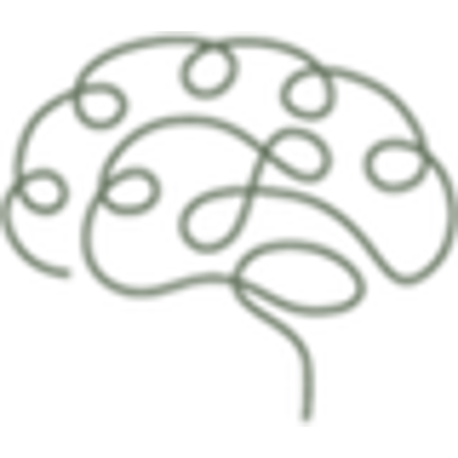

Psicoterapia
Na Terapia Cognitivo-Comportamental (TCC), olhamos juntos a relação entre o que você pensa, sente e faz, e construímos estratégias que caibam na sua vida para lidar com o que você enfrenta hoje.
Psicóloga · Especialista em Neuropsicologia · CRP 24/02653
Como posso ajudar

Na Terapia Cognitivo-Comportamental (TCC), olhamos juntos a relação entre o que você pensa, sente e faz, e construímos estratégias que caibam na sua vida para lidar com o que você enfrenta hoje.
Quando há dúvida sobre atenção, memória, aprendizagem ou comportamento, inclusive TDAH e TEA. Reúno história de vida, observação clínica e instrumentos padronizados para mapear como você funciona, e explico o resultado de forma clara.
Quando procurar e perguntas frequentesDocumentos escritos para quem vai lê-los: o médico, a escola, a equipe multidisciplinar ou a Justiça. Recebo também encaminhamentos de outros profissionais que precisam de uma avaliação.
Passo a passo
Uma conversa longa sobre sua história, a queixa que trouxe você e o que já foi tentado.
Algumas sessões com instrumentos padronizados para atenção, memória, linguagem e funções executivas.
Quando faz sentido, questionários respondidos por família e escola completam o quadro.
O documento que reúne os resultados, a conclusão e as recomendações, escrito para ser lido por quem decide.
O encontro em que explico tudo, com calma, para você e para quem acompanha você.
A avaliação é um processo, não um teste de um dia. O número de sessões depende da queixa e da idade, e combinamos isso logo na anamnese. Mais sobre a avaliação neuropsicológica.
O que faz diferença
Depois da última sessão de testagem, o laudo fica pronto em até 15 dias. A data da devolutiva é combinada já na anamnese e registrada por escrito.
Cada teste que uso tem parecer favorável no SATEPSI, o sistema do Conselho Federal de Psicologia que avalia os instrumentos. Teste de internet não entra em laudo.
O médico, a escola e a Justiça leem documentos o dia inteiro. O laudo traz a conclusão na linguagem que esses leitores usam e recomendações numeradas, para cada um saber o que fazer com ele.
Entrego o laudo em PDF com assinatura digital (gov.br ou certificado ICP-Brasil), que qualquer destinatário confere. A anamnese começa online, e a devolutiva pode ser por videochamada, com tempo para perguntas.
Sobre mim
Sou psicóloga, especialista em Neuropsicologia com título registrado no Conselho, e minha abordagem é a Terapia Cognitivo-Comportamental.
Trabalhei dois anos no Instituto Socioeducativo do Acre, com adolescentes em situações de alta complexidade, escrevendo relatórios que subsidiaram decisões da Justiça junto com as equipes de Direito e Serviço Social. Em 2026, fui convidada pelo Projeto VITA para um mutirão de avaliação no interior do Acre: três dias de campo e 87 laudos que, para muitas famílias, abriram a porta de terapia, apoio escolar e direitos.
Hoje moro em Goiânia e atendo online, com a mesma disciplina de escuta e de escrita técnica, do primeiro ao último caso.
Primeiro passo
Você me conta em poucas linhas o que está procurando, e eu respondo com os próximos passos e os horários. Antes da primeira conversa, envio um questionário curto, de uns 12 a 15 minutos, para eu chegar já conhecendo um pouco de você.
Tudo o que é dito em atendimento é protegido pelo sigilo profissional.
Falar pelo WhatsAppSe você está em sofrimento intenso ou pensando em se machucar agora, ligue 188 (CVV, 24 horas, gratuito) ou procure a emergência mais próxima. Este site não substitui atendimento de urgência.